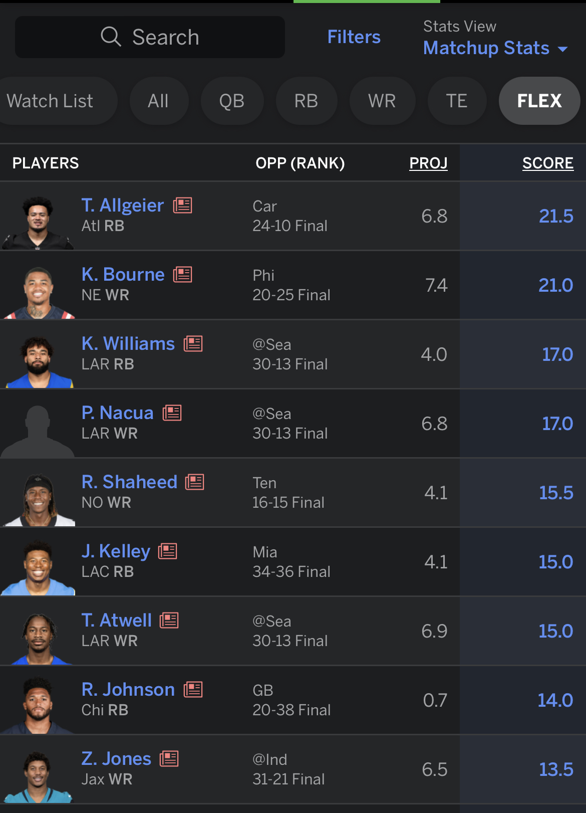

Season Maintenance
In fantasy football, it's crucial to stay vigilant and keep a close watch on your team throughout the season. Injuries to your players can have a significant impact on your roster's performance, so monitoring injury reports and adjusting your lineup accordingly is essential. Additionally, being aware of bye weeks ensures you have suitable replacements when key players are unavailable. Lastly, keeping an eye on poor performance is vital as it allows you to make timely adjustments, whether it's benching underperforming players or seeking waiver wire pickups to strengthen your team. Active management and adaptability are keys to success in fantasy football.
Consider week one as an illustrative case. Puka Nacua, chosen as the 177th pick in the NFL draft by the Los Angeles Rams, made an astounding debut, amassing an impressive 15 targets in his inaugural regular-season match. Notably, Nacua's rushing yards tally of 119 put him on par with Tyreek Hill, a first-round selection favored by numerous fantasy owners. Players like Nacua, alongside talents such as Kenneth Gainwell and Rashid Shaheed, are often overlooked during drafts but have the potential to provide substantial value to your fantasy team.
Trades

Trades in fantasy football involve team managers swapping players from their respective rosters. These transactions typically occur when two or more managers agree to exchange players to address specific needs or improve their teams. Trades can be a strategic way to bolster weak positions, balance rosters, or acquire elite talent. However, they must be mutually agreed upon and are often subject to league rules and approval by a commissioner or fellow managers to ensure fairness. Successful trades can be a key component of fantasy football strategy, but they require careful negotiation and consideration of each team's goals and roster dynamics.
There are a number of different things to remember when you are considering a trade. Ultimately, the goal is to trade up and strengthen your teams weaknesses. Here are a few strategies and tips to remember in regards to trades.
- Leveraging Depth: The key strategy lies in trading a couple of solid players from your roster in exchange for a standout performer. Consider this scenario: you've managed to secure three talented running backs like Christian McCaffrey, Rhamondre Stevenson, and Aaron Jones during your draft. However, you're not maximizing your team's potential if you can only start two out of the three. It's wise to assess other areas of vulnerability on your roster and explore opportunities to address them. For instance, you could trade Rhamondre Stevenson along with a quality wide receiver from your bench to acquire an above-average running back and a top-tier wide receiver, thereby enhancing your team's overall depth and performance.
- Roster Relief Dedicate the week leading up to your players' bye to highlight the potential of your sleeper choices to the rest of the league. Then, explore the possibility of trading one of your sleepers for a player who has already gone through his bye week. The majority of fantasy team managers tend to overlook the bye week factor, making it vital to not only keep tabs on your own team but also to monitor the rosters of other teams. This way, you can capitalize on these opportunities and bolster your squad for the long haul.
- Selling High When a fantasy football player has a standout performance, it's often wise to capitalize on their hot streak by offering them in trade negotiations. This proactive approach can help you maximize the value you receive in return before the player's performance potentially levels off.
Week 2 Prize Players
NFL Week 2 emerged as a pivotal moment for identifying several unnoticed players who made a significant impact on their respective teams. As the season unfolded, these hidden gems began to shine brightly. Some undrafted rookies, like a relentless defensive lineman who consistently pressured quarterbacks or an agile wide receiver with sure hands, caught the attention of fans and analysts alike. In the midst of injuries and lineup changes, previously overlooked backup quarterbacks stepped into the spotlight and displayed poise and precision. These under-the-radar players proved that in the NFL, talent can surface from unexpected places, reminding us that the league's depth of talent and potential for surprise performances make every week an opportunity to unearth the next breakout star.
If these unnoticed NFL Week 2 standouts are still available on your fantasy football waiver wire list, it's highly advisable to consider adding them to your roster. Their unexpected impact in real-life games could translate into valuable fantasy points, offering a potential edge over your competition. Don't hesitate; act swiftly to secure these emerging talents before others catch on to their potential.